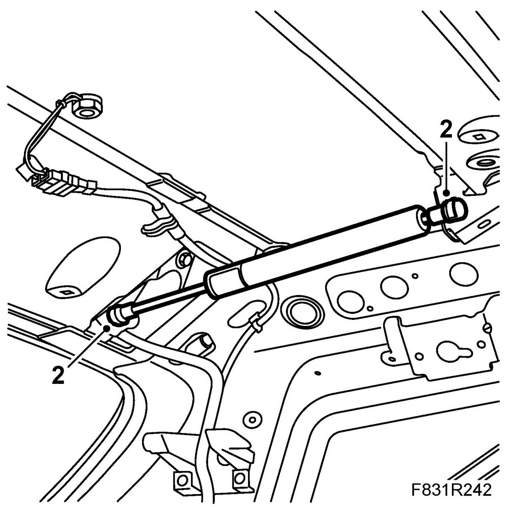
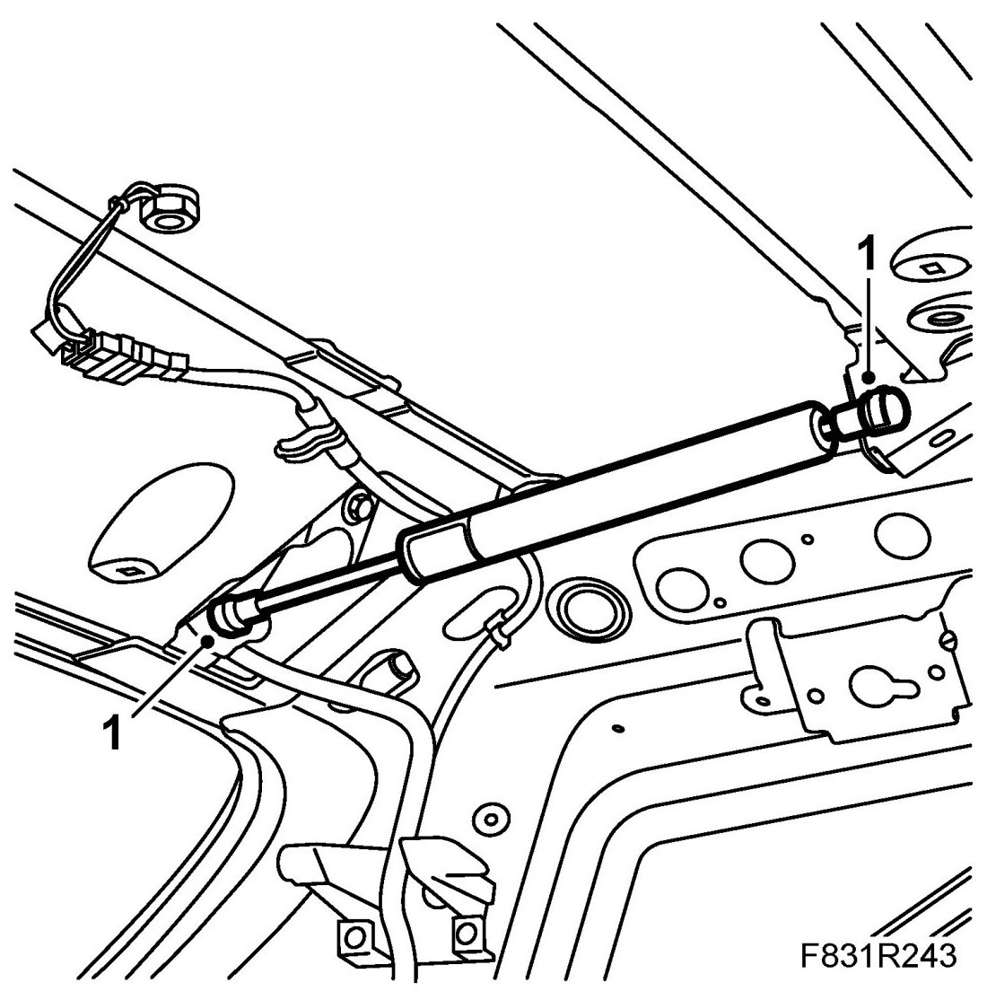

Tailgate, Gas Cartridge, 5D
Tailgate, Gas Cartridge, 5D
To remove
1. Remove Headlining, 5D.
2. Have an assistant hold the tailgate or support it using a suitable shaft. Remove the gas cartridge clips. Lift out the gas cartridge.

To fit
1. Put in place the gas cartridge. Fit the gas cartridge clips.

2. Fit Headlining, 5D.